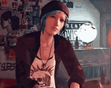
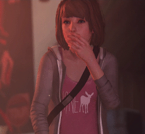
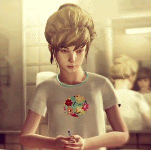
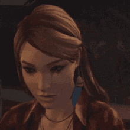
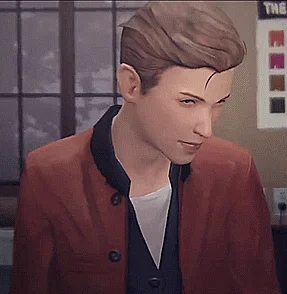
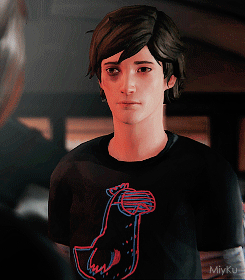

-
Chloe Prince
Descrição
Chloe é uma jovem teimosa, arteira e rebelde. Ela é uma típica rockeira punk, como representado em seu gosto musical e roupas. Ela gosta de ficar chapada, tomar cerveja, e pode ser descrita como audaciosa e extrovertida. Ela também é desbocada, faz comentários sarcásticos com frequência, age sem medo e gosta de se arriscar, algo que muitas vezes a causa problemas. Ela é propensa a ter crises de raiva, e sofre com pensamentos de abandono e falta de confiança após a morte de seu pai, a mudança de Max para Seattle, e o desaparecimento de Rachel Amber.
-
Max Caulfield
Descrição
Max é nerd, bem introvertida e levemente auto-consciente, particularmente em relação às suas fotografias. De acordo com si mesma, ela prefere apenas observar o mundo a sua volta do que realmente participar dele; é por isso que outros alunos, como Juliet Watson, que ela não se importaria realmente com os outros. Mas ao contrario, ela faz um esforço genuíno para mostrar gentileza com todos os alunos de Blackwell. Ela tem um claro pensamento dedutivo,esperta e sorrateira, mas prática, sensata, e madura para sua idade, especialmente comparada à sua melhor amiga, Chloe. Ela também é valente, se colocando no caminho do perigo para proteger aqueles com os quais se importa
-
Kate Marsh
Descrição
Kate é uma adolescente gentil, simpática e tímida que não gosta de ser o centro das atenções. Ela vem de uma família muito religiosa e é frequentemente vítima de bullying na Academia Blackwell por sua opinião conservadora sobre sexo e religião.
-
Rachel Amber
Descrição
Rachel era uma estudante popular na Academia Blackwell. Ela e Chloe Price eram muito próximas e sonhavam em deixar Arcadia Bay juntas. Porém, ela desapareceu repentinamente em uma segunda-feira, 22 de abril de 2013, deixando nenhuma pista de seu paradeiro.
-
Nathan Prescott
Descrição
Nathan aparenta ser agressivo, mimado, e age como um típico adolescente rico. Max Caulfield o descreve como, "o clone masculino da Victoria Chase, com muito mais dinheiro e atitude." Ele frequentemente usa a influência de sua família para fugir de qualquer responsabilidade por suas ações, acreditando estar acima da lei. Ele parece não ter empatia pelos outros e não mostra arrependimento pelo sofrimento daqueles que ele considera uma ameaça à sua autoridade.
-
Warren Graham
Descrição
Warren é o estereótipo de nerd cientista que "sabe como ser invisível", e adora filmes velhos e obscuros e anime. Ele tem uma natureza amável e sensível e está altamente interessado em Max. Ele sempre tenta se aproximar dela, mas acaba tendo que lidar com a rejeição da mesma constantemente. Ele também é muito tímido e inseguro com as meninas e se esforça para expressar e lidar com seus sentimentos, então ele tenta ocultar isto com um pouco de humor e piadas ruins. Ele é um bom amigo, pois ele é sempre amigável e protetor com a Max.